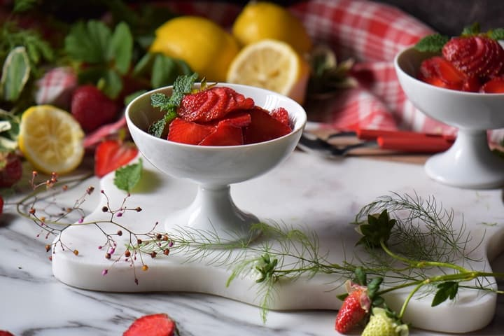

Italian Macerated Strawberries

Delicious Italian Macerated Strawberries
This recipe is a simple yet delightful way to enjoy fresh strawberries, perfect for topping desserts or enjoying on their own. The maceration process enhances the natural sweetness of the strawberries, making them a delicious treat.
Ingredients:
- 500g fresh strawberries, hulled and sliced
- 100g granulated sugar (adjust to taste)
- Juice of 1 lemon
- Fresh mint leaves (optional, for garnish)
- Vanilla ice cream or whipped cream (optional, for serving)
- Shortbread cookies or sponge cake (optional, for serving)
- Pinch of salt (optional, to enhance flavor)
- 1 tablespoon balsamic vinegar (optional, for added depth of flavor)
- 1 teaspoon vanilla extract (optional, for extra flavor)
- 1 tablespoon olive oil (optional, for a unique twist)
- 1 tablespoon honey (optional, for additional sweetness)
- 1 tablespoon orange zest (optional, for a citrusy touch)
- 1 tablespoon chopped fresh basil (optional, for a herbaceous note)
- 1 tablespoon liqueur (such as limoncello or Grand Marnier, optional)
- 1 tablespoon chopped nuts (such as almonds or pistachios, optional, for crunch)
- 1 tablespoon cocoa powder (optional, for a chocolatey twist)
- 1 tablespoon maple syrup (optional, for a different sweetener)
- 1 tablespoon yogurt (optional, for a creamy texture)
Steps
- In a large bowl, combine the sliced strawberries with the granulated sugar and lemon juice. If using, add a pinch of salt and balsamic vinegar for extra flavor.
- Toss gently to coat the strawberries evenly with the sugar and lemon juice.
- Let the strawberries sit at room temperature for about 30 minutes to 1 hour, allowing them to macerate and release their juices. Stir occasionally.
- After maceration, taste the strawberries and adjust sweetness if necessary by adding more sugar or honey.
- Serve the macerated strawberries in bowls or over desserts like vanilla ice cream, whipped cream, or shortbread cookies.
- Garnish with fresh mint leaves if desired.
- Enjoy your delicious Italian macerated strawberries!